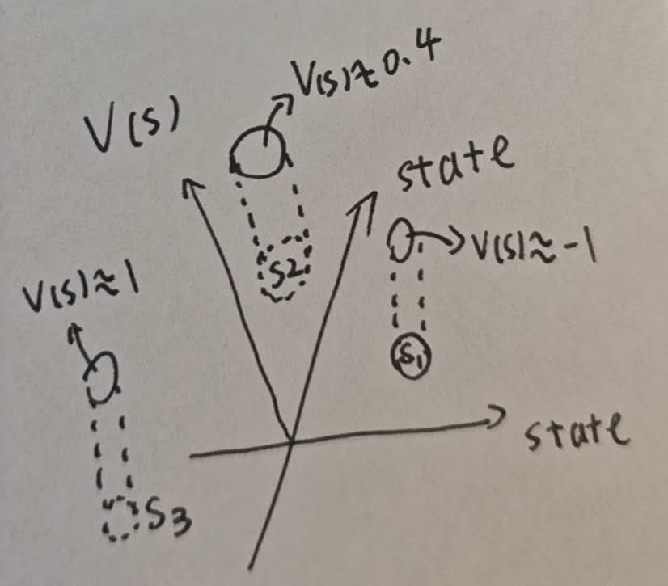
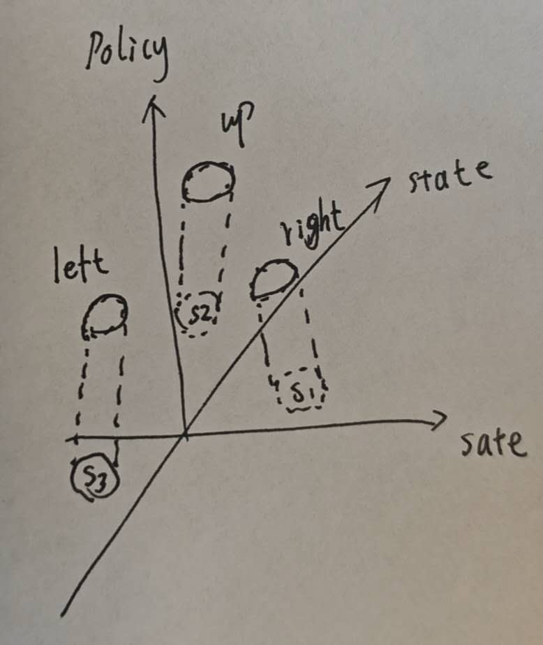
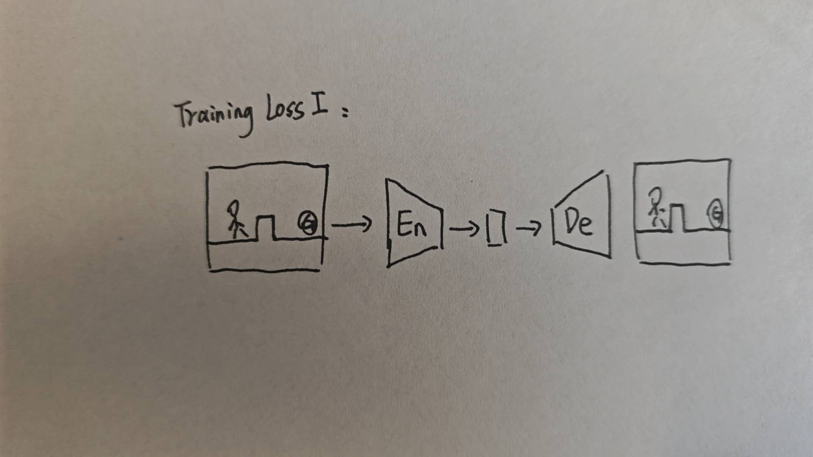
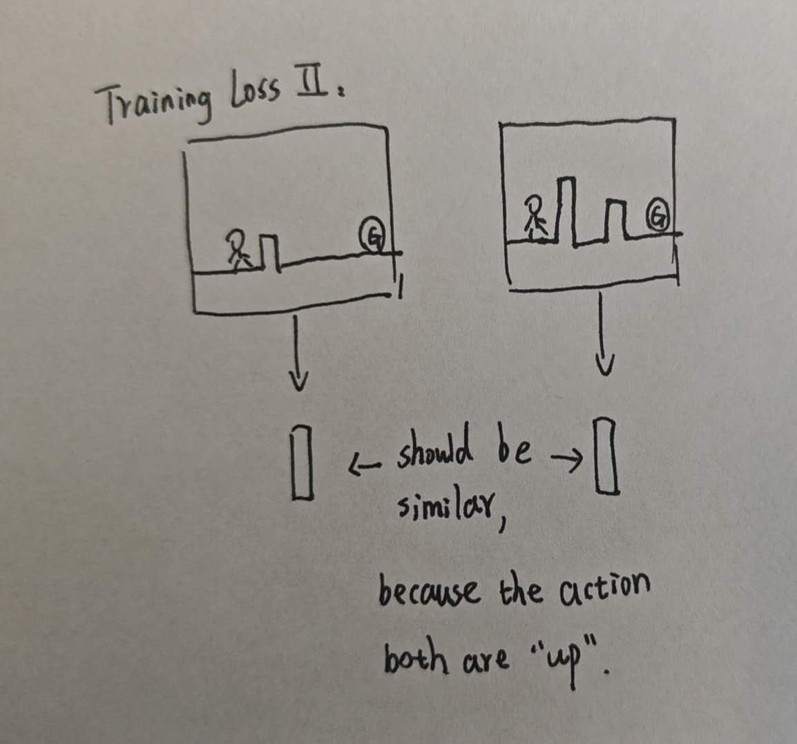
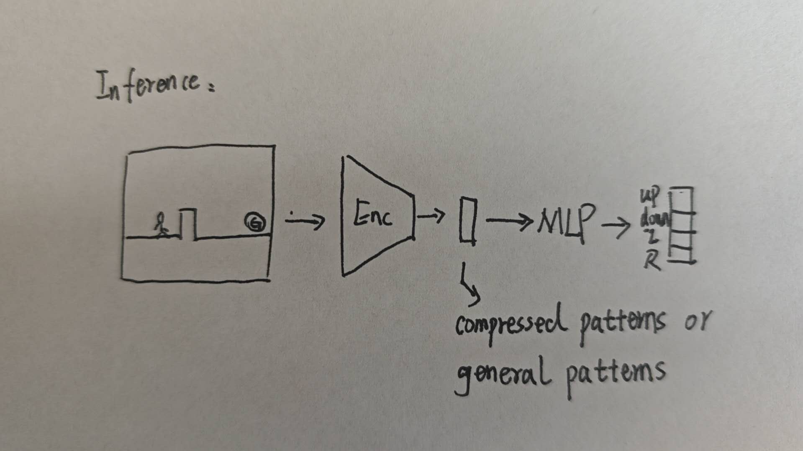

In reinforcement learning, the generalization ability might mean taking reasonable action given a state that the agent has never seen before. The only information the agent receives is the information of states. Therefore, the prerequisite of generalization is that there is a regularity between states, which means there is some common, general pattern between states. In this case, after training on many states, the agent could have the ability to extract the general regularity within states. This provides some possibility to achieve generalization[1].
So, the prerequisite should be the observations contain such information so that the agent could extract to make decision. If there is not useful information within the observation, we shouldn't blame the algorithm of agents.
There are two kinds of regularity in reinforcement learning:
In the space of \(V(s)\), within a specific area of states, the state values or state-action values of those states are similar with each other.

In the space of \(\pi^*(s)\), within a specific area of states, the optimal actions from those states might be similar or even the same with each other. For example, within a specific area of states, the actions might all be "Move right".

Based on that, the next thing to do is make agent learn to make decision based on those common patterns. In stead of heavily on particular patterns which only appear exclusively in data points.
In order to enforce agent to make decision based on general pattern, or plus little pattern specialized for a small group of data points of trajectories, we can use AutoEncoder, which is an in-born general pattern extractor.
What below is the implementation detail:
Let's use super mario as an example.
So far I think we could have such loss functions:
To force encoder learn to extract compressed representation(or critical information for a screenshot).

For those different screenshots but with the same optimal action, their corresponding outputs from the encoder should be similar. This idea corresponds to different but similar states might have same optimal policy.

After training of AutoEncoder, We only keep Encoder. We then fix the encoder(or not), plug in a simple head, like MLP layer, as actor, then we perform regular RL training pipeline like PPO. In this setting, the MLP could only utilize the general pattern to make decision, which might improve the generalization ability.

[1]: A.-M. Farahmand, D. Precup, A. M. S. Barreto, and M. Ghavamzadeh, “Classification-Based Approximate Policy Iteration,” IEEE Transactions on Automatic Control, vol. 60, no. 11, pp. 2989–2993, Nov. 2015. doi:10.1109/TAC.2015.2418411.